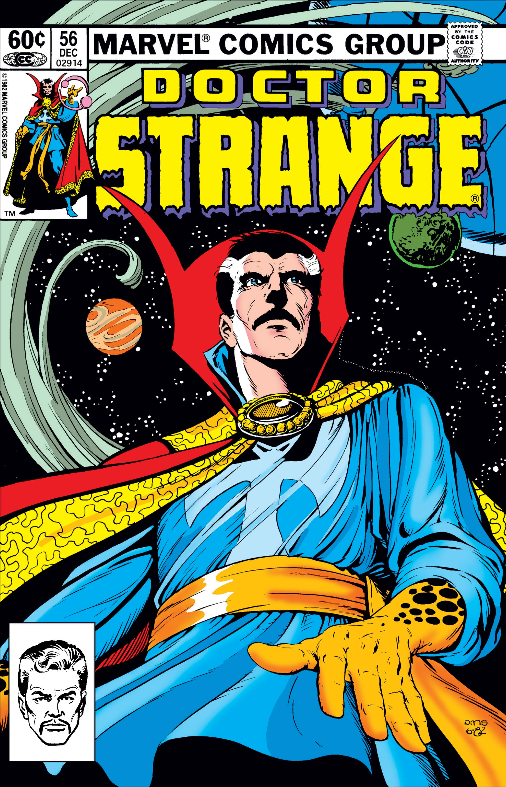

Doctor Strange

Origins
&esmp;Originally a brilliant neurosurgeon, after a horrible car accident ruined the fine motor use of his hands, Doctor Steven Strange began learning about the mystic arts, and became a sorceror, and even the Sorceror Supreme. Donning the Cloak of Levitation and the Eye of Agamotto, as well as having a large arsenal of spells, Doctor Strange protects the world from magic wielding threats such as Dormammu, and many more.
Dfferent versions of Doctor Strange
Different variations include:
- Doctor Strange - Earth 616
- Doctor Strange - Ultimate Universe
- Strange Supreme
- Benedict Cumberbatch - Dr. Strange of the MCU